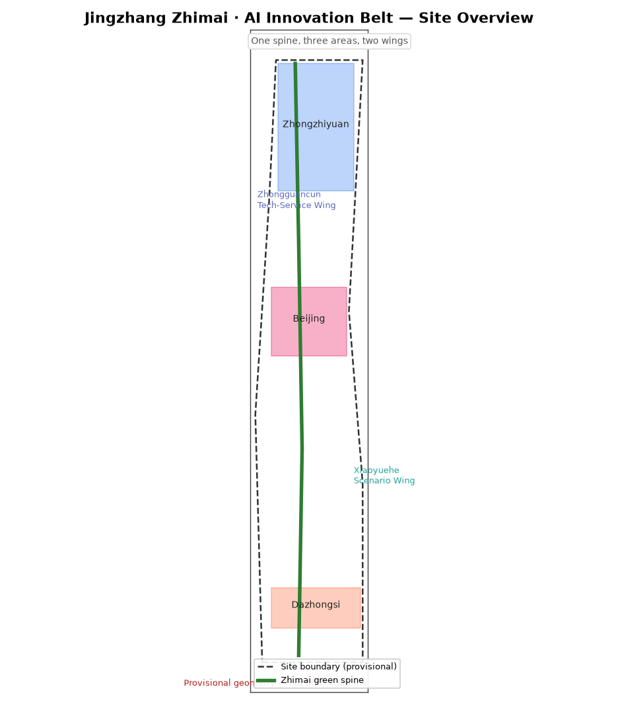
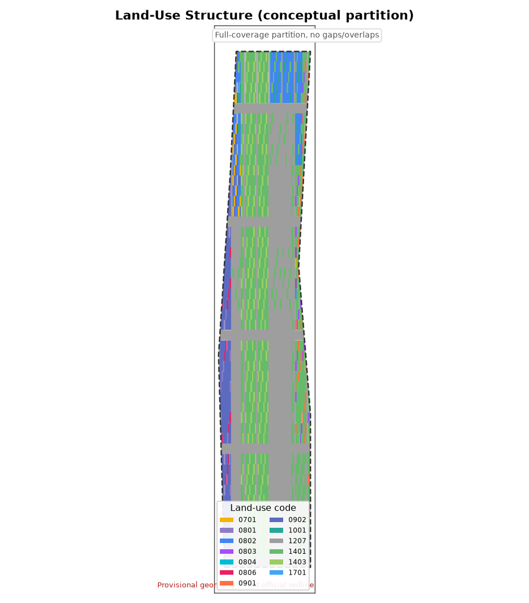
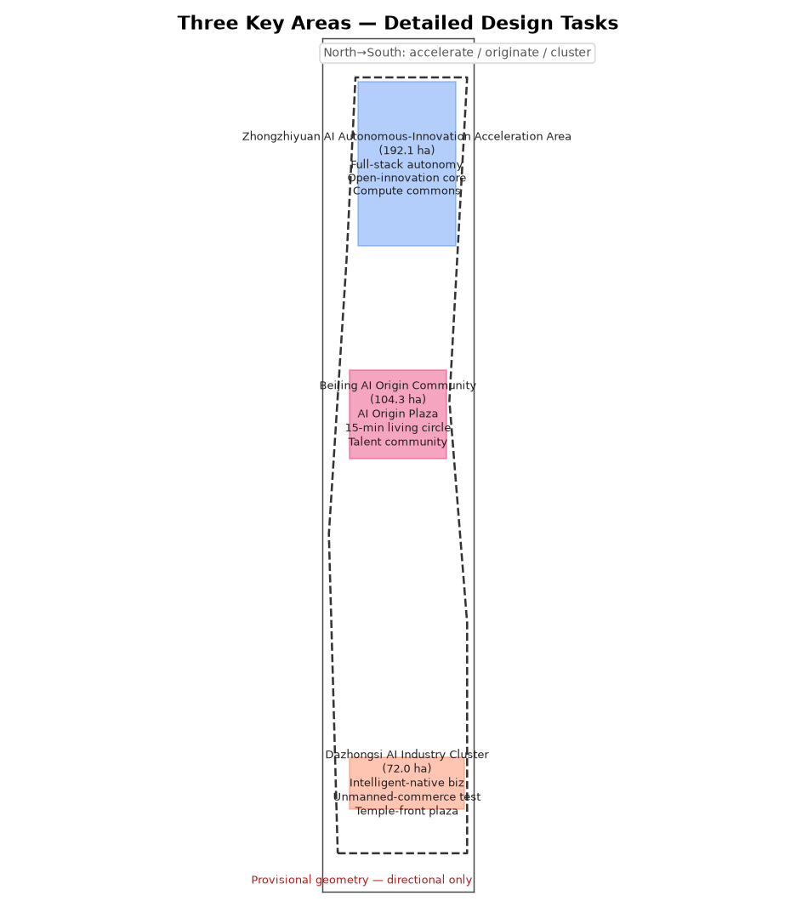
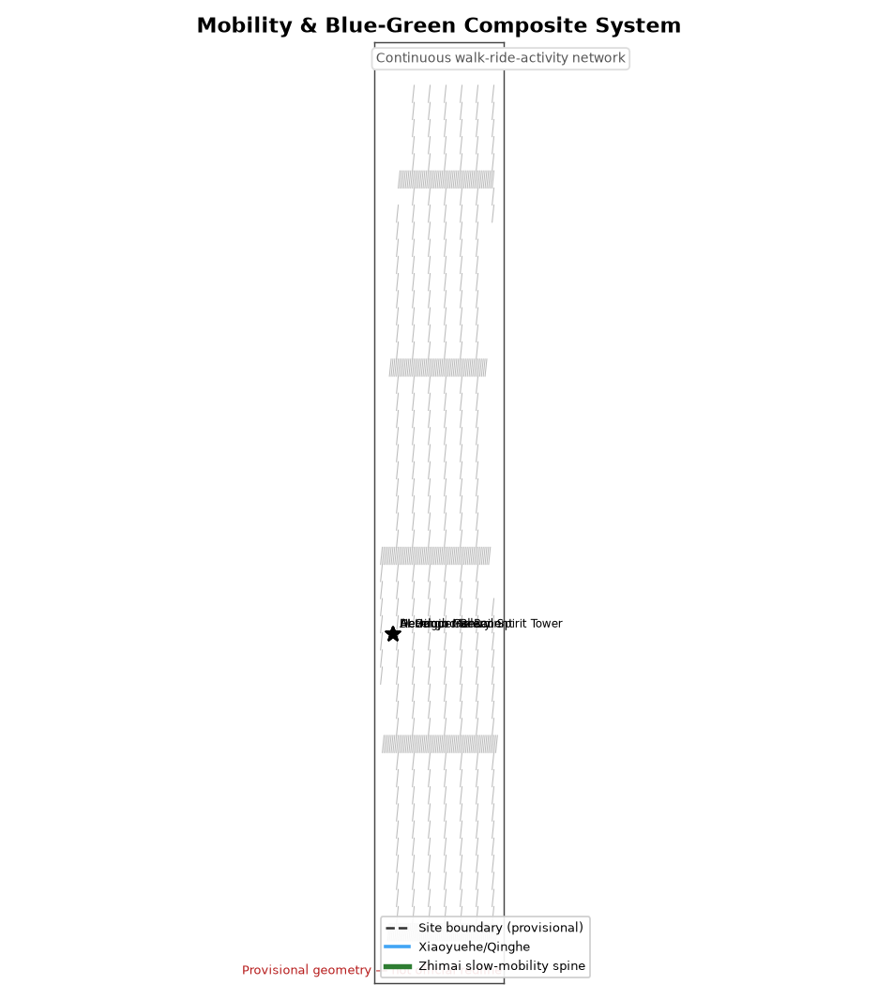
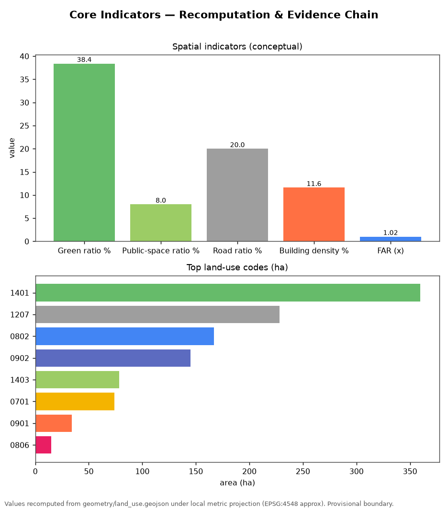

百年京张 AI 创新带城市设计开源征集 · 正式提交包（临时边界）

一条智脉绿廊、三处重点区域、两翼协同。临时边界，非官方红线。


用地分类依据国土空间用地分类指南（2023），按 14 类二级代码划分。

轨道接驳 + 绿道慢行 + 地块微循环。
公园绿地、防护绿地与广场用地构成蓝绿网络。
建筑基底为概念生成，FAR 为方向性设计值。
三处重点区各设更新项目清单与分期。

12 个场景卡片、6 类人才画像、4 处 AI 朝圣地标。
数值由 geometry/land_use.geojson 复算（EPSG:4548 近似）。临时边界，官方 polygon 到达后需重算。
公告章节 1.3/1.4/1.5 与六项 agent 任务全覆盖；6 项专业标准已响应。详见 compliance_matrix.json、standard_matrix.json、design_depth_matrix.json。
本地自检：PASS（provisional geometry）。包状态：ready_for_review（临时几何，含正式就绪提示）。
官方资格预审公告（2026-05-09）、agent 任务书（2026-05-18）、中关村“三区两翼”（2026-04-03）、城市设计管理办法、国土空间用地分类指南、临时边界（2026-06-05）。
所有空间与运营建议均为概念建议；法定控规条件（FAR、高度、密度、绿地率、退线）缺失，列为待正式数据补齐。临时几何须由官方 CAD/GIS polygon 替换后方可进入专业评分。